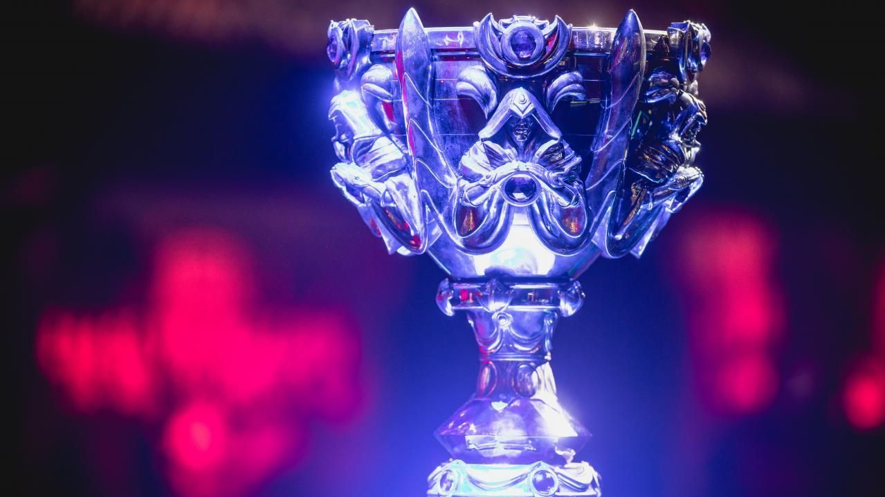

Patch 11.15 traz novo campeão e mudanças nas mecânicas de jogo
Publicado em 29 de Junho de 2023
O patch 11.15 de League of Legends foi lançado hoje, trazendo o novo campeão "Kai'Sa, a Filha do Vazio" e várias mudanças nas mecânicas de jogo. Essas atualizações prometem impactar a jogabilidade e o meta do jogo, oferecendo novas opções estratégicas para os jogadores.
Torneio Mundial de League of Legends 2023 terá premiação recorde
Publicado em 27 de Junho de 2023
O Torneio Mundial de League of Legends deste ano promete ser o maior de todos, com uma premiação recorde de milhões de dólares. As melhores equipes do mundo se enfrentarão em batalhas épicas para conquistar o título de campeão mundial e o prêmio em dinheiro.

Rework do campeão Ezreal é anunciado pela Riot Games
Publicado em 25 de Junho de 2023
A Riot Games anunciou oficialmente o rework do campeão Ezreal, um dos ícones mais antigos de League of Legends. Com essa atualização, Ezreal receberá um visual renovado, habilidades ajustadas e uma nova mecânica, trazendo uma experiência de jogo aprimorada para os jogadores.